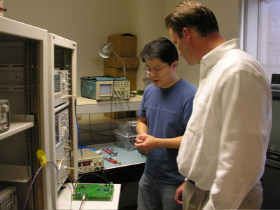
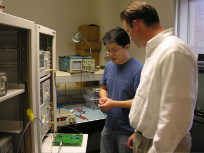

Current Research Projects
- Ultra Low Voltage Analog and RF Design for nano-scale CMOS technologies
- High Performance Integrated Oscillators
- Device Mismatch
- Ultra-wideband Circuits for Pulse Radio
Undergraduate and M.S. students research involvement
Please see our Prospective Students/Student Projects Page.Research Seminars
The Columbia Integrated Systems Lab has a regular research seminar series where external and internal speakers present their latest research results. These seminars are open to the public. Email announcements are sent out via a mailing list.Research Resources & Facilities
Chip Fabrication
We have access to a number of different semiconductor processes for the fabrication of our circuits through a fabrication service provides (e.g., MOSIS, Europractice) as well as through direct relationships with companies and foundries. We currently mainly use 90nm CMOS, 0.13um CMOS, 0.18um CMOS and 0.25um/40GHz BiCMOS processes and are initiating our work in 65nm and 45nm CMOS processes. Take a look at our Chip Gallery!
Computing & CAD tools
We use a full set of industrial grade design tools for our IC designs. This includes tools suites from Cadence, Mentor and Agilent. We use PC desktops running Linux as well as servers running SunOS and Linux.
Analog & RF IC characterization laboratory
Our lab facilities went through a substantial upgrade during 2004 and 2005 thanks to an NSF MRI Grant (with Prof. Tsividis) in conjunction with funding from Columbia University and the School of Engineering. We currently have a state-of-the-art measurement facility for IC characterization from DC to 40 GHz. We can measure on wafer circuits or packaged devices. Our instruments allow a full characterization in the frequency domain and time domain.
 
